July 2023¶
Nacho caresses the 8-year old girl¶
- To everyone’s surprise, I continue to go into the conservatory to practice every day.
- One morning, all the teachers are collecting something from Gloria at reception; paperwork of some sort.
- I’m in the queue, waiting for a key to a room with a piano.
- I’m chatting with the harmony teacher Adria Gil.
- All the teachers are smirking at me aggressively.
- They know about the switcheroo porn don’t they? And that the conservatory part-times as a porn studio.
- Do they know about all the other targets too? Including the children?
- Do they really not care?
- I have no idea what’s really going on and I feel like I’m the better person standing up to pathetic bullies so it doesn’t bother me.
- Nacho the clarinet teacher, Domingo’s good friend and associate, is talking to a mother and her 8-year-old daughter.

- Nacho looks at me quickly, then starts to caress the child’s face, stroking it suggestively, while talking to the mother and glancing back at me periodically.
- Everyone is embarrassed. I feel sick. Gloria looks away.
- He is doing this to show me that he, a teacher at the conservatory, can do whatever he likes to the little girls.
- He may claim common cultural practices for this later, and in the fairly recent past that may have been true in Spain; certainly in 2005 when I first lived in Spain I would not have been concerned about this sort of thing at all.
- However, since normal men across the world got themselves addicted to pedo-porn, creating a burgeoning market which requires the daily abuse of millions of minors; add to that my horrific sexual grooming experiences at the conservatory and online at home in Dénia, we should be extremely concerned about what this sort of behavior implies.
- And then, what with the conservatory being an actual porn studio…
X.com¶
- The weird communication continues on X.
- Pictures of Ana Requena continue to appear on the
@jctot19timeline; the account I have been led to believe is the trumpet teacher’s. - I start to look more closely at the
@jctot19account. - I see a lot of interaction with an account
@SchrodingerGata, but even more so with an account namedCarmenwith address@sinremite.

- I will find out over a year later, from a Spanish foreign office official, that the woman who owns the
@SchrodingerGataaccount, Rocío Vidal, suffered a serious hacking attack. - She is a successful business woman, of course.
- I also see Rocío Vidal in photos which remind me of plate lady in that they imply non-consensually filmed sexual activity.
- In summer 2024, the porn-gangs bring Rocío Vidal to Cauterets France and set it up so that I see her.
- I believe this is an endeavour to persuade me to do porn (I’m bombarded with it online every day at that point, plus drugged with strong aphrodisiacs) and it’s possible they have managed to set up sedating tech in my hotel room at the Garden & City hotel, with the help of Sandra Diaz and others.
- In July 2023, I believe that the
Carmenaccount, given it has so much interaction with the@jctot19account over many many years, must be a girlfriend. - In truth, it is Carmen Lopez Cano, Domingo Lopez Cano’s sister.
@1frgvn¶
- All of my tweets over this period were being read by numerous non-English speakers.
- I knew I was being watched constantly online, so I told people what I thought of them and I gave them something of a show.
- Why not? It was the only way I could think of positively dealing with this horrible situation which made me feel like ants were crawling all over me and I couldn’t get them off by any normal means.
- I was away in Thailand for a good chunk of July 2023 without access to X.
- At the beginning of the month you can see I’m starting to think about the rave music scene from 1989; when I was sedated, gang-raped repeatedly, and filmed.
- I played this music to myself, and to my audience, and I was thinking about building a DJ-app on X so I tagged all the music I played on X with my DJ name:
#MaSelecta. - After two+ weeks away from Dénia, and two+ weeks off social media - apart from Google searches on my mobile - my interest in 1989 had disappeared completely. However, this interest started up again hard in August in France when I was back online, just as it had the August before.
- I believe this interest was triggered directly by hackers who had root access to my laptop and thus social media account interfaces, and they were therefore able to manipulate me into thinking about these times, about sex, about the trumpet teacher, and then eventually to frighten me and make me believe I was going to be arrested when I returned to Dénia in September.
- Before I went to Thailand this month, and after I returned, the conversation with hackers continued online in the same vein it had in June.
- The following screenshots are a summary of the communication; all my tweets from this period are available here.
- Remember, I believe I’m talking directly to Domingo Cano, the trumpet teacher, teachers and staff at the conservatory, their families, friends, and criminal associates.
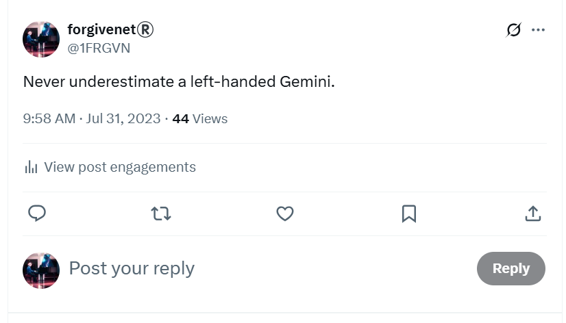
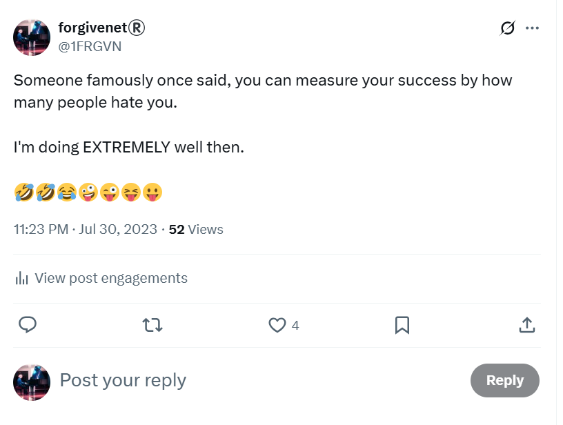
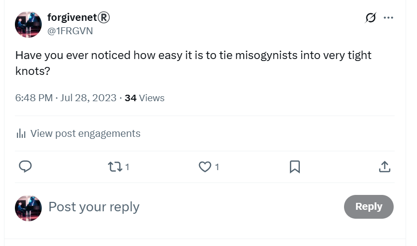
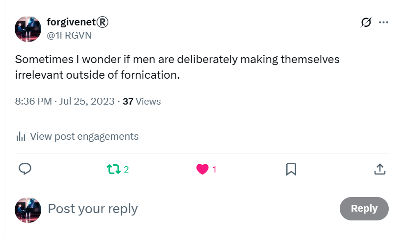
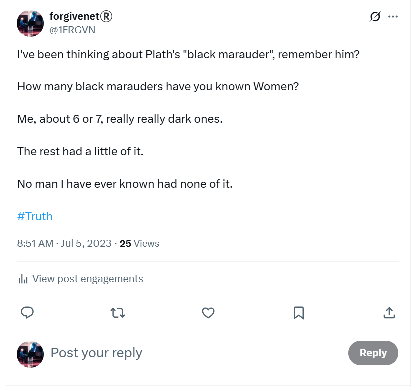
- The black marauder is in reference to the dark images of the trumpet teacher I often saw online. For example, in the plate lady pics and like I had imagined him in my apartment watching me do yoga.
- In response to a post on the
@jctot19Google searches I was doing which said something like “you will now experience the bull sector”, that I felt was a direct misogynist threat to me:
- … I told them a little story about how me and bulls are quite good friends, especially Indian ones.
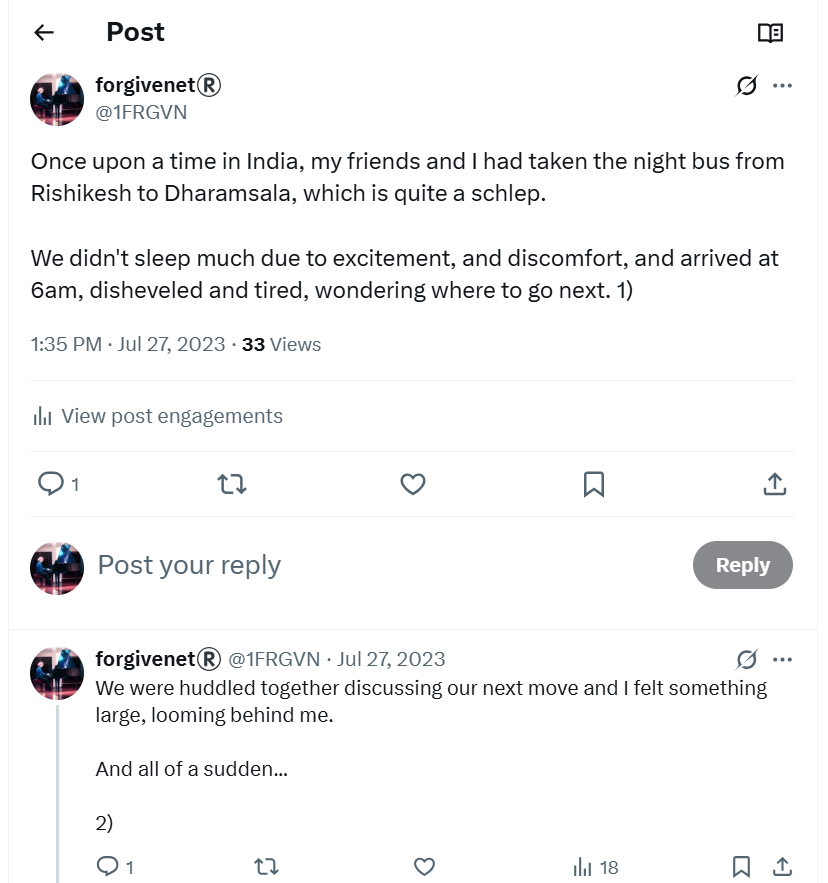
- I also told spiritual tales, little anecdotes, and significant stories; and I gave them information on trauma healing which I am certain they still need.
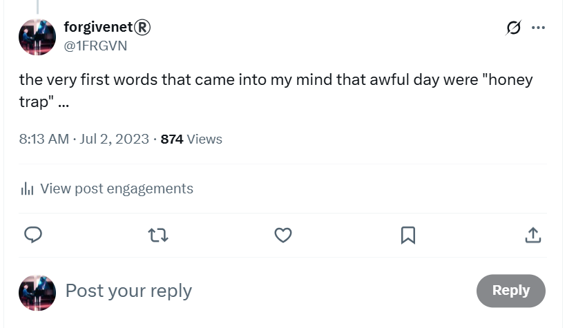
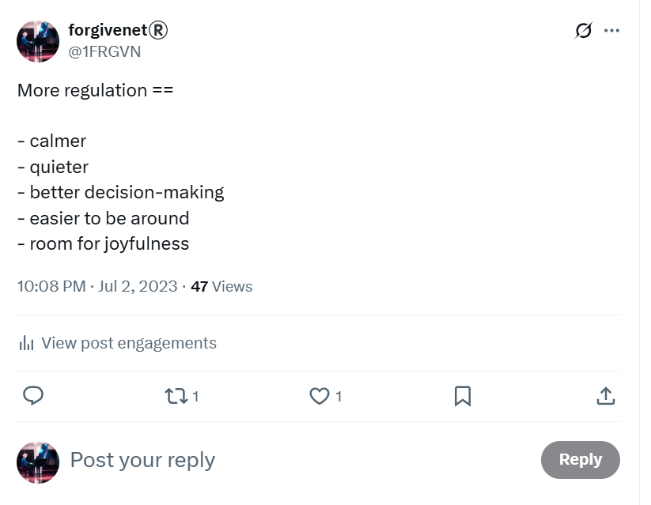
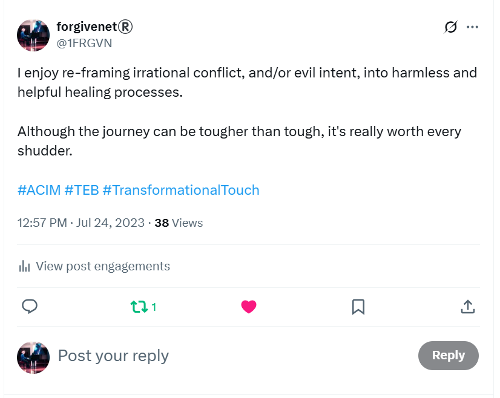
- Sometimes, the communication felt like friendly, gentle banter.
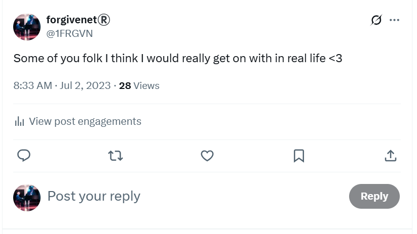
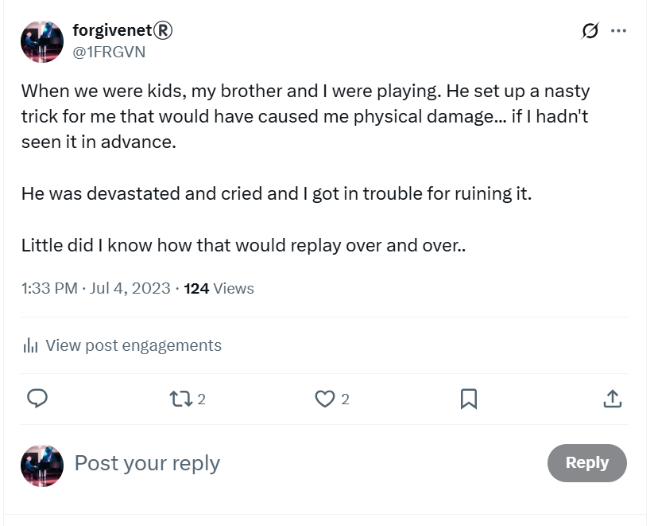
- Sometimes, my tweets triggered memes for the hackers they would use relentlessly in the mass of porn they sent me. This tweet mentioning personal favorite was oft repeated in pornographic scenarios on my X timeline that I did not subscribe to.
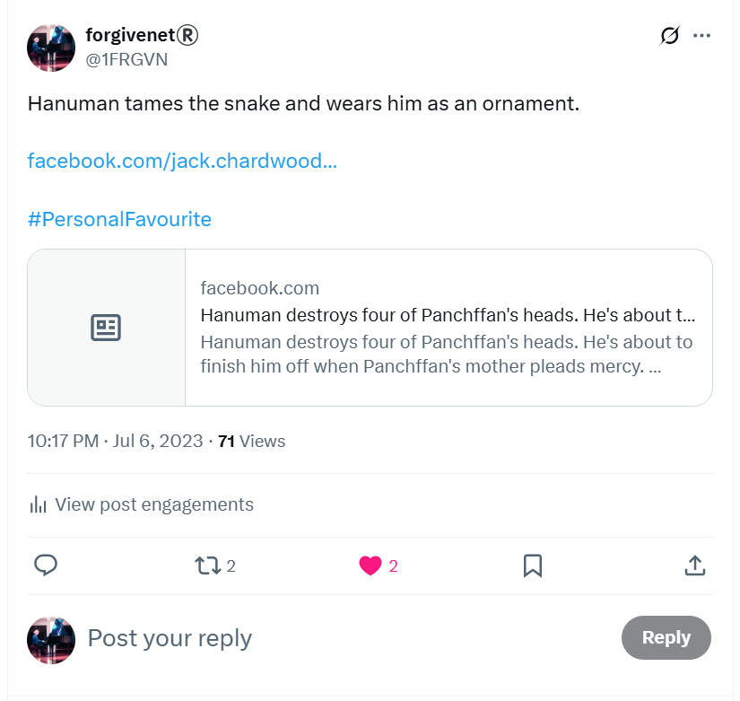
- When I am finally away from Dénia and in Lourdes, the hackers start to reveal themselves again.
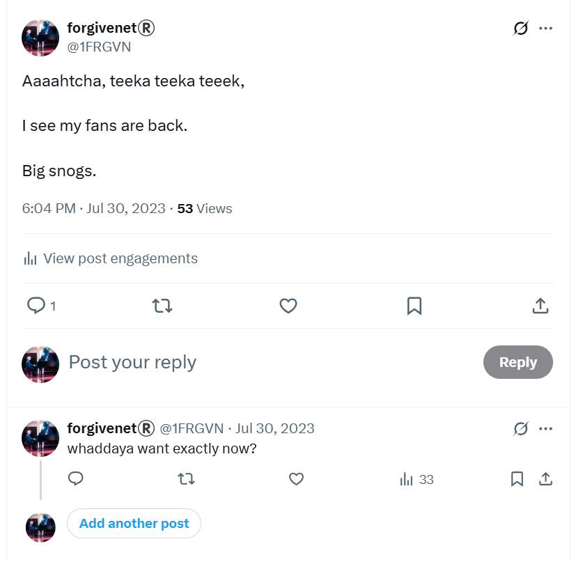
Baby seal¶
- A significant meme I used to communicate online with the porn-gangs of Dénia (before I knew about the porn-gangs of Dénia) was a baby seal.

- I complained bitterly that teachers and staff at the conservatory had treated me like hunters bludgeoning a baby seal, and enjoying it.
- On both the
@jctot19and@sinremiteaccounts, I start to see the same video of a seal escaping sharks by jumping on a boat. - I realize this is in reference to escaping the shark at Alicante airport, the fourth man, Bruno, of the switcheroo team, who may be Gloria the school receptionists brother, and who we believe to have fathered multiple children in the region for the purpose of baby-rape and pedophile porn.
@JackChardwood¶
- This is another account I have which I did not use very much at all.
- In fact, there are zero tweets on this account in June 2023.
- However, from about mid-July, hackers start to target this account extensively for about a year, then all activity stops again.
- We’ll look at this more closely.
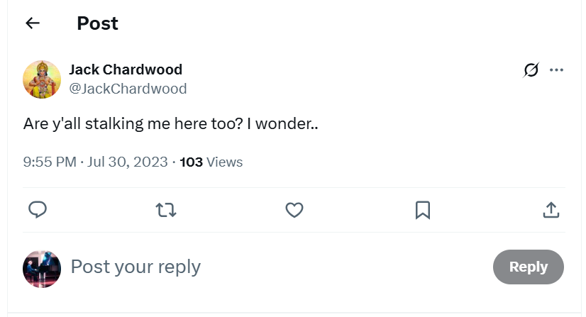
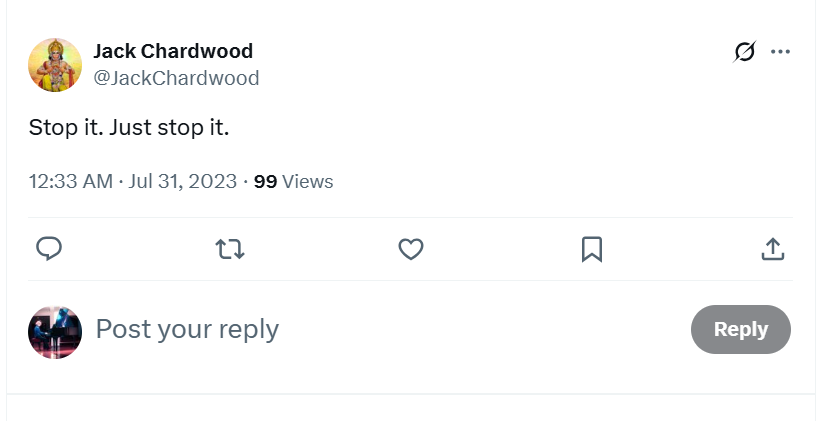
- The amount of views on these tweets is unprecedented given I had zero activity on this account only weeks before.
- Currently, May 2025, I also have near zero activity on this account.
- I will be followed by numerous porn and other fake accounts; including accounts with pictures of men I would see in Dénia streets, relentless stalker accounts that suggested the Lopez Cano family, made up crypto accounts, even new crypto coins which seemed to have been generated for me specifically.
- The criminal resources put into terrorizing me were enormous but I didn’t realize this until around a year later.
- Until then, I believe I’m being terrorized by bored misogynist idiots with nothing better to do with their lives.
Urgent staff meetings at the conservatory¶
- I do wonder what those staff meetings must have been like after I turned up to practice on 19th June.

- I wonder if the actors had expected finish with their constant charades; or whether they had hoped for a new and less problematic target like normal?
- Either way, teachers and staff at the conservatory must have realized, with some displeasure, that their part in this wild conspiracy was not over as I was obviously planning on returning for year 4 of professional piano studies in September.
- Did Domingo order a ramp up of the online harassment and terror with the intention that I would not return to my studies?
- Is this why the stalking got even worse for me, and why they even involved the traffic department of the Guardia Civil who stopped me on the A23 and told me who had called them and informed them about my out of date license, the document kept by the conservatory for my identification?
- Did anyone urge an end to it all; or if they had any sense did they know to keep quiet about it?
- Was there a monetary deal involved with the porn distributors who had expected me to be delivered up to them at the end of the school year, as usual?
- Did the arrogance and egoism get the better of them while they started to make crashing errors of judgment (more than previous, if that were possible) and give me a wealth of content for a best-selling book and Netflix documentary series?
- Were they so sure I’d be killed or die by suicide, they believed they would never have anything to answer to?
Google search¶
- At the beginning of this month, Elon Musk makes it impossible to look at other accounts’ content unless you are logged in.
- Up until then, I had been looking at the
@jctot19account activity fairly easily as, even though the account had blocked me, I didn’t have to log in to see the posts. - Now that was impossible unless I used a fake account, which I did a couple of times, but it was cumbersome and whoever was managing this account seemed to know about these accounts immediately.
-
So, instead, I start to look him up on Google search using the following search terms:
jctot19 twitterjctot19 x
-
I did this a lot when I was in Thailand on my mobile phone.
- The results I see, particularly in the image section, seem to be part of the conversation I’m having with the trumpet teacher.
Extremely significant results
- This ended up being one of the more definitive ways the hackers communicated with me and shared information.
- The hackers were able to manipulate the results of all my Google search requests.
- This seemed incredible to me at first; but given their root access into my laptop, phone, and thus social media accounts, it would be a pretty rudimentary attack and with some time and investment the hack could become complex and full of features.
- Significant pictures, or posts, would appear in these results and then disappear.
- This is where they will eventually post the picture of me in my underwear that I will take of myself in August 2023 with my mobile phone.
- I will explain how this has been happening to the police and two cyber experts the following May, who all fail to provide any assistance.
- In July 2023, I was not taking screenshots because it was unclear to me exactly what was going on, and I had no idea I had been hacked.
- Screenshots eventually looked something like this:
- The following sections are examples of things that came up in Google search during this period.
Plate lady early in the month¶
- On the
@jctot19account’s Google search results, I start to see various photos of a tiny, pretty lady who is a Spanish potter or a ceramics artist.

- I see her in her studio, putting plates on the wall.

- She is short and cute. She looks Spanish and must be around 25-30 years old.
- She comes up on the
@jctot19searches, and in relation to communications the account has with the@sinremiteaccount. - I assume she must be Carmen.
- She wears little navy blue shorts that look like Iyengar yoga pants.
- Whoever is taking the pictures is a male who is close to her. He’s much taller than her and it’s clear they are in a relationship of some sort.
- I never see what he looks like.

- From the look in her eyes, one photo is clearly taken just a few moments before they will be sexually intimate with each other.
- Her look reminds me of how myself and the trumpet teacher looked at each other at the chamber music concert in May.
- I start to wonder if plate lady is aware she’s being photographed. And if not, I wonder how he is doing it.
- I wonder if plate lady, or Carmen if that’s her name, is the trumpet teacher’s girlfriend.
Plate lady later in the month¶
- A few weeks go by.
- The pictures of plate lady change. I see her walking in the rice paddies of Valencia with a man. It’s winter.

- The man’s shape and build is exactly that of the trumpet teacher, although you cannot see his face.
- Whoever is taking these pictures is way back from the couple; 50-100 metres, following.
- The man is telling plate lady something important as they walk. The mood is so sombre, I wonder if he is breaking up with her.

- Whatever he tells her has shocked her to her core.
- It’s obvious that the man who has the exact silhouette of the trumpet teacher has told plate lady they are being photographed at that moment.
- Plate lady’s horrified expression is exaggerated in the photo as she looks directly at the cameraman.

Critical
- At the time, I have no idea what any of this is about, what it means, or who she is.
- I believe the pics to be current, present day activity; perhaps she is a girlfriend he has dumped, for me maybe?
- Over a year later, hackers will give me her name; Irene.
- I write about the discovery in the August 2024 report.
- I look Irene up on Google and find her.
- The very same woman; except, she is in her 50s.
- The pictures are from 30 years ago.
- I’m stunned.
- The revelation provokes more questions than it answers.
- The trumpet teacher’s gang had extraordinarily advanced surveillance technology even way back in the 80s and 90s.
- This casts a light on a million different other things we might be interested in.
- And who would be so keen to grass up the trumpet teacher’s gang in this way? Even giving a name?
- Could it be the British gangs he had betrayed so boldly?
Carmen¶
- Results of the
@jctot19Google search always included a picture of a cartoon woman, Carmen. - They still do, even today.
- This is the
@sinremiteaccount I mentioned before that has had a great deal of interaction with the@jctot19account over many years.

- Most of the images in the screenshot above are new.
- I haven’t seen them previously, apart from the Carmen image which has been appearing on and off since July 2023, and the photo of Rocío Vidal which has been appearing since around October 2023 - we will talk about that later as it is significant.
- Curiously, I thought Carmen was plate lady but that wasn’t the case.
- The
@sinremiteand the@jctot19account always posted enticing statements which seemed to be for me. - The first statement below was posted on the
@jctot19account search results many times and means something like, You’re the one who’s going to fall for this shit … you think you’ve got one over me but I’m still ahead.

- The Es un fuera de serie is something like, he’s one of a kind, there’s no-one quite like him.
- Carmen, as I’m informed later, represents Carmen Cano, Domingo’s sister, a major player in the online deceit and harassment, and the woman who likely entered my home with others to douse my belongings in pesticides in October 2024, and add illicit substances to my food and bathroom products whenever I went out over the years 2022-2024.
- I sometimes wonder if Carmen Cano was managing all the Spanish stalker accounts that targeted me, and other victims obviously; delegating access from time to time when it got too busy.
- I also wonder if the
@jctot19and the@sinremiteaccounts are both Carmen’s responsibility; managed by an AI auto-post facility for phishing whenever she’s not using them. - Here’s an earlier screenshot using the
@sinremiteas search term with some interesting results we’ll examine below.
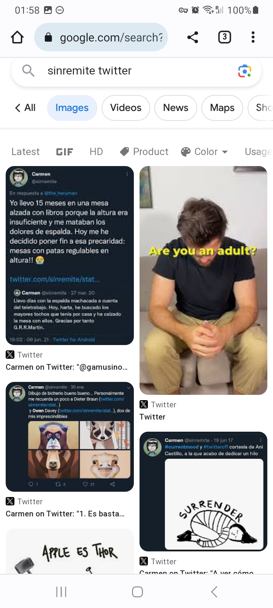
- The man in the picture above is dressed exactly the same as the guy at the Alhambra, another significant set of posts that I mention below.
- The first post refers to a ‘table’.
- This ‘table’ meme became a more frequent online reference over August and September 2023. I realized eventually this was referring to another part of my police statement in which I mention being aware of sitting on a tabletop, possibly undressed, in North London in 1989 when I was 16.
- What I was not aware of - that the criminal gangs of Dénia, and teachers and staff at the conservatory, were aware of, and informed me of during their relentless online harassment over 2023-2024 - is that this table incident I mentioned in my police statement had taken place just after being sedated, gang raped, and filmed.
- Of course, the bottom right picture is a direct reference to me curled up in a little ball as I was when I was filmed and gang raped.
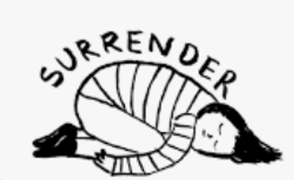
- Only the Dénia hackers knew about this in July 2023.
- Notably, the
@sinremiteaccount no longer exists. This is a very recent change, maybe in the last month or so, time of writing being May 2025.
Other smaller examples from Google searches¶
Romance in San Sebastian¶
- On the
@jctot19results, there is a short-story. - I read it.
- It is a hand-written romance of some sort.
- I believe the author to be the trumpet teacher.
- The author describes the first time he met the woman he married and how they spend the whole day in San Sebastian.

- She tells him about her life, her mother, the hurts she has endured over the years.
- He keeps quiet and listens, waiting patiently for the promised physical intimacy.
- Apart from the arrogance of the author, it’s a fairly nice story, very romantic… until…
- The author starts talking about how much spit they will have shared over the last 25 years.
- The author describes it in measures, and counts litres and litres.
- What had been a fairly nice story becomes grotesque and disturbing.
- At the time, I find it extremely weird.
- And I’m only reading it because I think TT wrote it.
- Now I see that this is exactly like all communication I have with manipulating cyber-stalkers; apart from some notably heart-felt conversations with one person I also believed to be the trumpet teacher who told me he could not go against these people or they would kidnap his daughters.
- The repeated pattern of content is to entice with something genuine and nice, then twist and distort it into fearful nastiness.
- I believe this is a common online NLP tactic, used for frightening and destabilizing targets.
- The sex gangs take a target from emotional pole-to-pole, as it were, and gain control of them by applying fear and associating it with love.
- Eventually, this makes porn and prostitution more and more reasonable, incrementally; then impossible to escape.
- It’s like titration and decoupling in trauma healing practices, except this is the opposite, to make very emotionally unwell and vulnerable for sinister purposes.
Seaweed¶
- I continue to see photos of hanging strips of seaweed on the
@sinremiteaccount. - They are from artist Julia Lohmann’s installations, mentioned in the June 2023 chapter.
- I have no idea what they’re from and I think nothing of them.
- A few weeks later, I see Ana Requena Marin in a Julia Lohmann installation.

- I’m truly amazed at the dedication and commitment of the teachers and staff at the conservatory.
- None of it made any sense to me; unless they are truly evil people.
- I was never able to reconcile this idea with my experience of living in Dénia, prior to being targeted by the criminal pedo-porn gangs.
- Ana Requena appears to be a prominent member of the gang.
The guy at the Alhambra¶
- The plate lady pictures stop completely and I start seeing a similar “set” of repeated pictures with a specific character.
- This time, it’s a man sitting at a bench with the Alhambra behind him in Granada.
- The picture is viewable for a few weeks.
- I see this man at the beach in September when he walks in front of me, making sure I see his face.

Ana¶
- Interspersed with this are more references to Ana, and more pictures of her modelling.
- I saw a whole range of these pictures of Ana which are undoubtedly easily to come across if you can be bothered to look.
- You could ask her too, of course.
Mortadelo y Filemón¶
- I see pictures of two cartoon men, Mortadelo y Filemón.
- I understood them to reference the trumpet teacher and Domingo as crashing fools.
- It turns out that around this time the cartoonist died so that was in keeping with the times and, perhaps, was not related intentionally.

Girl with a cross on her back¶
- I see a picture of a woman wearing a black dress with a cross strap at the back.
- She has her back to the photographer and appears to be in a professional studio.
- I will see this woman again at the checkout at the Carrefour store in Dénia in October 2024.
- The reference is to the tattoo I have on my back, and that I am a target.

Girl taking a pill¶
- I see a picture of a young woman who I recognize from Dénia.
- She is taking a pill in an exaggerated manner.
- I know this is related to the 1989 drug scene and what I told Domingo at the airport in 2014.
- I will see this woman in real life in September singing loudly at me about frogs in boxes at the end of the tunnel in Dénia with a gypsy guitarist.
- The account had Suarez in the name and there were numerous pictures of her, all rather threatening.
- I saw her on another fake account more recently.
Photos that seemed to have power over my mind¶
- I’d see photos online and become totally engrossed by them, as if there was something in the image trying to tell me something very important.
- Here’s one I’ve just seen posted again at the time of writing.
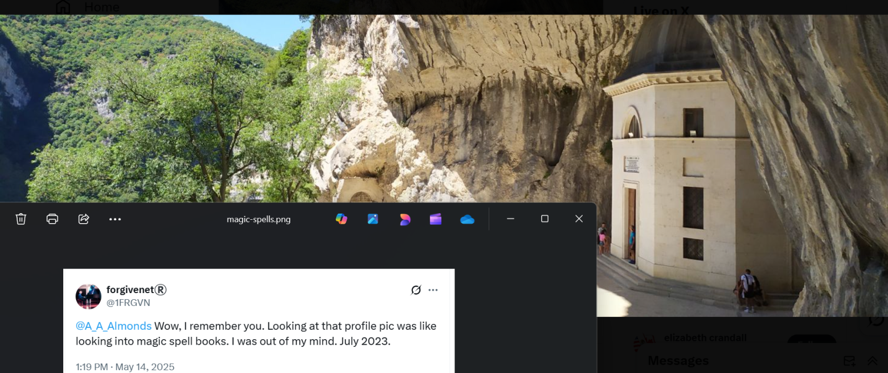
- Other images were of people on beaches; such as lovers kissing but you could never make out who they were, families with children playing, again with people you could never make out.
- It all seemed extremely important.
- Perhaps it was!
- This sort of thing went on continuously. I guess it’s automated.
Thailand¶
- Early in the month I go to Thailand for a holiday.
- My vision is extremely blurry and I cannot make people out very well.
- I do not take my laptop so I am not connected to my Twitter account for the duration.
- I use my mobile phone to run Google searches on the
@jctot19and the@sinremiteaccounts, and start running searches on my own account name too@1frgvn. - The pictures referenced above continue to appear in the search results of
@jctot19 twitter. - I see curious messages on the Google search results which seem to be for me.
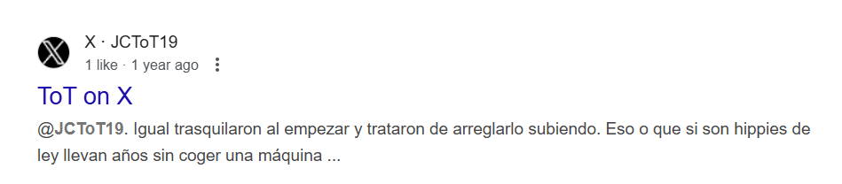
- The pictures of plate lady stop appearing.
- There are now references to Thailand and the far east, pictures of tall apartment buildings in Hong Kong, for example.
- I’m certain he (I assume the trumpet teacher) is manipulating my Google search results and I don’t know how.
- I usually connect to hotel networks and I have a lot of issues logging into my banking apps. I lose access to my Openbank app. I can’t log into banking again until I get back home.
- Then, I see a tweet which appears to have a message for me directly: don’t leave me murph.
- It blows my mind.
- (This is a misquote from what was said in the film. If you didn’t know, my surname is Murphy.)

How they do it
- Twitter hacking can take place in a number of ways, one of which is in a parasitical manner whereby hackers have delegate access to larger accounts and can post on them.
- I’m told they refer to this as “leaching”.
- Mac spoofing can overwrite anything a targeted machine sees which explains the constant UI rewrite hacks, but this probably requires initial root access to target machines which is probably only available with the help of internet company insiders.
- However, the above tweet from 10th July 2023 is public and available so I’m guessing delegated access and/or involvement of the account owner.
- The X hacking was so expert and intense, it would not surprise me if there were some backend hack into the X network that criminals have been exploiting for years.
- I had no sexual feelings at all while I was in Thailand.
Little red elephant¶
- I buy my love, the trumpet teacher, a little red elephant from Thailand.
- Of course, I can never give it to him because he doesn’t really exist; he is, at best, one of four or more distinct men.
- I’m so in love, I’m compelled to say and do nice things for this man.
- It is excruciating that I receive no communication back.
- I believe there was an intense romantic liaison between us, except I was sedated.
- The body always knows.
- Eventually, I’m so distressed, I leave the little red elephant on top of the Montgo and ask the mountain to bless us.
- The elephant was a little bit like this one and made by the same company:

- They don’t make the single plain color elephants anymore.
Hala¶
- I meet a woman on holiday with her family in Thailand, Hala Foustok.
- I tell her everything that has happened, the whole story as I see it at that time.
- Her name comes up on fake accounts later on in the summer.
- My understanding of what was going on at this time was sketchy.
- I believed there was a true love relationship with the trumpet teacher, that something real had happened, that he was important to me, that he loved me back and wouldn’t do anything to hurt me, and that the real problem was that I was being targeted and abused by Domingo Lopez Cano and his associates at the conservatory.
- It’s really not clear why I was so invested in this relationship with the trumpet teacher because there was so little evidence for it.
- I can only assume - in May 2025 having survived three years of anti-freeze poisoning, threats to my life, and constant drugging with psychoactive substances - that I was being manipulated online in ways I still have to figure out and my mind was not my own.
- In November 2025, having finally remembered the switcheroo porn conspiracy starring myself, teachers, students, and staff at the conservatory of Denia, meeting this woman takes on a whole different tone.
- She was with her daughter who seemed to be severely traumatized.
- The woman Hala was a lot like the chaos monkeys that have surrounded me ever since I bumped into Hazel and Domingo all those years back.
- She was extremely difficult, outrageously rude to the waiters, and behaved as if she was the Sultan of Brunei requesting miniscule changes on everything she ordered at dinner.
- Looking back, it must have been another choreography, it was just absurd.
- I don’t remember seeing her paying for anything, or signing her bills; she would just bark at the waitresses, oh, put it on my bill and walk off.
- Her ex-husband was a depressed millionaire, apparently, and ran a business looking after stray dogs.
- I had no reason to doubt anything they were saying to me.
- They had met working at Vodafone in Paddington, something we shared, except when I tried to talk about this, she deflected.
- The day after I told her what I knew, they left hurriedly with the excuse the girl - suffering from severe alopecia - had gotten dengue fever.
- Like the others, she never responded to my subsequent attempt to communicate and make sure the girl was OK.
- The woman, Hala, said she was Lebanese, Islamic, and living in St John’s Wood.
- Given I had just managed to escape trumpet teacher number four - Bruno, Gloria’s brother - waiting for me at Alicante airport a few weeks before, and given I had gone back to practice at the conservatory the next day, with all the teachers amazed and laughing at me (although I wonder now if perhaps some of that laughter was hopeful surprise), they would have been desperate to know how much I knew at that stage, and maybe even get a top up in which may explain the horrific nightmare I had.
- One afternoon, there was a discussion about the product I had bought at 7-11 - coconut oil. Her daughter and her were discussing it, pointing, being a bit shifty; and then the daughter asked me what it was. And it didn’t make any sense because if they’d been in Samui a million times like she said she had, she’d know exactly what the coconut oil was.
- She said something about a friend’s dad dying too, just before she left; planting seeds again?
- The story was that Hala had been at the Spa Samui once before, and been hanging out with a woman just like she was hanging out with me, and that woman’s dad had died suddenly while they were there, but at the same moment Hala had just taken a very strong painkiller (for a migraine, she said) and it was kicking in, so when her “friend” told her, “my dad’s just died”, she walked away, high.
- She wanted to know if I thought that was bad of her, but there was something very strange about the story and I had no answer for her at that time, and then they were gone, poof!
- A lot like Sandra and the hairdresser and others, Hala made trouble for me with Polly the masseuse I recommended.
- I told Hala Polly had been instrumental in my healing from sedated rape and sexual assault and I also told her I had thought the masseuses had switched on me.
- After Hala had a massage with Polly, the Thai women - yoga teachers, masseuses, etc - started to say weirdly toxic things to me about sex and prostitution as if someone had been lying to them about me.
- Polly was whisked away to work in Germany soon after… by whom, I wonder?
- It was inconceivable to me how much money I had been making for British and Spanish criminal gangs, and even more inconceivable that some evil person was planning on inheriting my personal wealth and sharing it around (closing in on half a million at that stage), so the idea that they would send people around the world to stalk me, like they did the following Christmas in Madrid, wasn’t even a seed of an idea, yet.
- Obviously, given the it’s safe report going back to the Cano-Lopez’s and Smiths via Hala and goodness knows who else, the terror continued apace; but they never stopped to think that I would survive whatever they threw at me, remember enough to launch a truth missile into the stratosphere, and quietly tell my thunderous story.

Hala’s ex-husband¶
- He was suffering with depression, apparently, or he knew what was going on and that was how she covered anything he might have said by accident.
- He did mention something very funny at dinner.
- They had all been going to the Spa, back in the day, and whenever he came to Thailand, he said, he would go round the island on his scooter and try out all the hotels pools.
- He described how he would walk in and convince everyone he was staying there.
- He was hilarious actually and we were all cracking up.
- Looking back, they were a team really weren’t they.
- Or, he was worth the divorce - it’s what they do - and it finished him.
- I mean, God only knows, but he was suicidal and had made a few attempts on his own life.
- Could he have been another victim of the suicide-manipulation tech, a bit of a toughie?
- He was, apparently, terribly rich and the daughter was his, apparently.
- But, of course, it could have all been BS… apart from what she told me about the dad dying, I believe.
- God, when I think about how much money they were spending on running after me, checking up on me… and Bali was still a year away!
- Is that why they decided to get subscribers to pay to see me everywhere I was in the world? It was cheaper, and maybe made them even more money than they were spending?
First letter to Concha¶
- While I’m away, I decide to write to Concha to tell her everything, and apologize for mentioning on X that she was being bullied by Domingo’s students.
- Concha was my friend so I felt I could reach out to her.
-
This is the first of a series of letters I write to civil servants, the school board, and multiple global organizations asking for help because I’m being terrorized by teachers and staff at the conservatory of Dénia.
-
The letter is very vague, reflecting my incomplete understanding about what was going on and my desire to tread carefully.
- I do mention how stressed I was, that I had been teased and provoked, that I was being stalked on X, that they (teachers and staff involved) had set the mafia on me, and some other ironic statements that suggest, at a subconscious level, I knew exactly what had been happening to me.
First letter to Concha
Perhaps you already know, but the provocation had already started before the trumpet teacher arrived in December last year, and I suppose I gave them what they wanted, albeit in a rather unorthodox manner, and with some unexpected extras. It was a very, very stressful time for me, as intended.
- My hope that the nightmare is over is extraordinarily ambitious and reflect an utterly incomplete assessment of the situation.
- I have no idea that Domingo and his team will have read my letter to Concha weeks before she reads it herself.
The first time I become terrified about being arrested¶
- One night, during the detox in Thailand, I have a terrifying dream.
- I dream that Domingo and his family will have me arrested by the police, for some lie they invent, and I end up in jail for 7 years.
- I wake up, horrified. The wall beside my bed starts to glow. It is a window into another dimension, another world.
- I see trees, a forest.
- Something’s coming.
- It’s Light like I’ve never seen before and it has nearly reached my bedroom.
- I’m so scared I get out of bed and run to an area of the room which is out of the ‘line of sight’, as it were, of the Light which is pounding into my bedroom at the wall beside my bed.

- I’m hyperventilating, crouched down, terrified.
- The dream ends as the light gently fades.
- I feel like a biblical character when God comes with a message; someone who lies down on the floor in fear.
- It’s all just too terrifying to comprehend.
- The next morning, I’m still reeling from this dream. I’m certain I’m going to be arrested and end up in jail for 7 years.
- I don’t know what the police charge will be but prison is a certainty.
- I tell Hala and her ex-husband and the centre manager Patrick about my nightmare; but not about the Light cos that’s a bit embarrassing.
- Looking back, I can see I was psychologically unbalanced, and it is perhaps more evidence to point towards constant drugging with psychoactive substances via my toiletries, or perhaps through some of my health supplements like my antifungal liquid I took every day, often before bed.
- Even though I was not connected to my X account, online NLP/hypnosis manipulation techniques would have been continuing via my hacked mobile phone.
- This was the first instance of me being overwhelmingly terrified about being arrested.
- There was something triggering this fear which the gangs used successfully on a number of occasions; specifically in August 2023 and in April 2024 when I become terrified about being arrested once again.
- Curiously, this terrorizing rather backfired on the criminal gangs as it seemed to be cracking open my mind in exceptionally beneficial ways.
- I can’t believe this dream was their intention. God’s maybe.
Durian for Gloria¶
- On my way back home to Spain from Thailand, I buy a present for Concha and a present for Gloria.
- I’m so disgusted with Gloria’s behavior, I buy her some durian which is quite delicious but famously doesn’t smell very nice.

- I bring the gifts into the conservatory, and tuck the letter to Concha inside the gift box.
- I text Concha to make sure she receives the letter.
- Throughout the summer, hackers will refer to ‘durian’ repeatedly, amongst other significant things.
Concha responds¶
- I receive an email from Concha replying to my first letter.
- She asks me if I had been abused by the trumpet teacher and, if I had, I should have reported it immediately and she would have been able to help me.

- Ironically, although indeed I had been seriously sexually groomed and abused, I had no idea how at that time.
- I explain that I will write a more complete history of what happened and hopefully we can meet up in September because I will be away.
Second letter to Concha¶
- My second letter is an extremely clear report of everything that had happened to me at the conservatory.
-
I make reference to everything I have mentioned in this statement, without understanding the extraordinary criminal implications underpinning my experience.
- Spanish version of the second letter to Concha.
- English version of the second letter to Concha.
Disinterested Dénia police
- When I go to the police in February 2024 after a threat of violence on Twitter, I take numerous documents written in Spanish for them to look at, including all my written complaints to the school board.
- The police decide they will only read the letters I have written to Concha, before telling me there’s no crime and I should go away.
- They refuse to read anything else.
- They tell me a man who was trying to recruit me to his honey-trap enterprise and threatening me online probably thinks I’m ugly. (That, presumably, justifies his threat.)
- They tell me I need to take a civil case against the conservatory.
- After receiving this letter, Concha makes no response to me at all.
- Her silence speaks a thousand words.
- I WhatsApp Concha briefly when I’m being cyber-stalked and attacked online at the end of August in France.
- I tell her that I found out they have hacked me, and that I’m scared.
- I ask her if she thinks these people are dangerous?
- She says she doesn’t think so.
- She’s lying.
Driving to Lourdes¶
- I’m home briefly after returning from Thailand.
- The constant online communication (harassment) continues.
- I feel sexually aroused again.
- At the end of the month, I set off for Lourdes to spend the rest of the summer in France.
- Just outside of Oliva, a woman calls me. It’s a missed call.
- I look her up on WhatsApp. She looks like the trumpet teacher. I’m guessing its his mum. The message on her WhatsApp profile is significant too.
- While having lunch on the A23, I check my WhatsApp messages on my UK phone which I haven’t checked in months.
- My friend from Singapore had contacted me a couple of months previously, and I hadn’t noticed.
- I text him back immediately.
Stopped by the traffic police¶
- After lunch, just outside Teruel, I am stopped by the Guardia Civil traffic police.

- They inform me my driving license is invalid as it is a British one and I should have changed it.
- I tell them I thought I had six months from March 2023 when the law changed and had planned to do it in September when I returned to Spain.
- Apparently it was three months, or I had made some mistake or other; anyway the conversation was very nice, we spoke amiably and politely, and the officer told me he was going to fine me 100 euros instead of the 500 I could have been fined.
- I was very apologetic and assured him I would deal with it immediately I was back from France.
- I had been initially really scared that they were going to stop me from driving in Spain.
- We were talking about stuff, and I forgot a word I needed, the word for management service (gestor), as I was explaining I would get them to deal with it immediately, but I couldn’t remember the word, and I was scratching my head … and he says …
- “Ladrones de Dénia”, which means bad people of Dénia.
- It was an extraordinarily weird thing to say, and I took it to mean I had been grassed up by teachers and staff at the conservatory to the traffic police!
- I wonder now if being informed about this was part of the conspiracy.
- The identification document the conservatory had for me was my British driving license.
- What I didn’t realize yet was that the wrong ‘uns of Las Marinas would be able to tell the police the exact moment I would be in a particular area of the carriageway, on the A23 outside Teruel, because they were tracking my movements.
- The missed call was a warning, a preliminary wind-up, and I believe I was supposed to think the trumpet teacher was behind all this, except now I’m certain he wasn’t.
- In my consequent communication with my Singapore friend about an hour later, I explain I was stopped by the police.
- He tells me he wrote a song about me. I ask permission from him to tweet it.
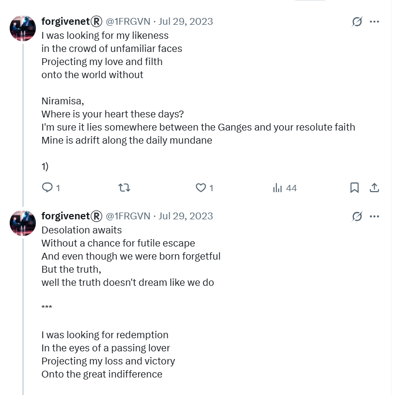
- I’m adding this info because there was some concern about my friend Yan and my lack of total isolation the following year.
Lourdes¶
- I arrive in Lourdes.
- When I meet my friend Sandra Rita Diaz, I’m sorry to tell her that my negative suspicions about what had been going on were correct, and that I had been bullied and targeted by Domingo and his associates, and that the trumpet teacher was involved also.
- I was still in love, however.
- And still very much out of my mind.
- Sandra Rita Diaz looked alarmed from time to time as I never stopped talking about my overwhelming feelings.
- I must have still been regularly ingesting whatever substances the criminal gangs were using to control me.
- Interestingly, Sandra Rita Diaz often asked to use the toilet whenever she visited my room.
- I believe it was around this time that Sandra Rita Diaz started to talk about poisoning in other contexts, repeatedly.
- Poisoning would be a common theme in our discussions for over a year.
- Was she trying to warn me about something?
- Or is she just a bit leaky?
The abomination of desolation in the holy place¶
- Is Lourdes another one of those holy places mentioned in Daniel and Matthew?